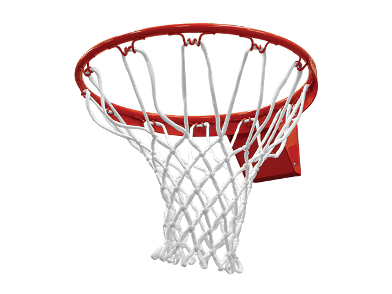
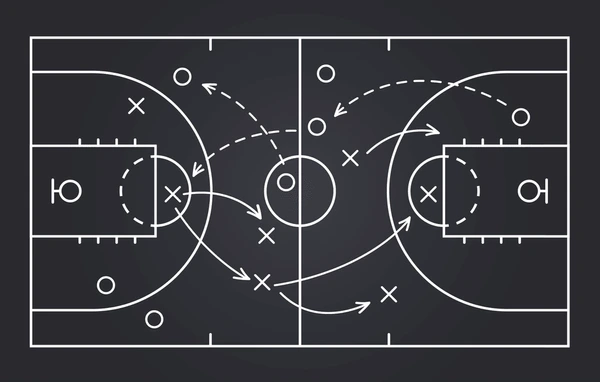

Καλώς ήρθατε στον Κόσμο του Μπάσκετ!
1. Τι είναι το μπάσκετ;
Η καλαθοσφαίριση δεν είναι απλώς ένα παιχνίδι - είναι τρόπος ζωής. Ανακαλύψτε την ιστορία, τους κανονισμούς και το πάθος που το έχουν κάνει ένα από τα πιο δημοφιλή αθλήματα παγκοσμίως.
Μάθε περισσότερα → 2. Οι κορυφαίες διοργανώσεις
NBA: Είναι το κορυφαίο πρωτάθλημα μπάσκετ στον κόσμο, με τους καλύτερους παίκτες να αγωνίζονται για τον τίτλο του πρωταθλητή. Η ένταση και ο ανταγωνισμός είναι αμείωτοι, και οι αγώνες συγκεντρώνουν εκατομμύρια θεατές παγκοσμίως.
Euroleague: Είναι η κορυφαία διασυλλογική διοργάνωση μπάσκετ στην Ευρώπη. Οργανώνεται με τις καλύτερες ομάδες από όλη την ήπειρο, προσφέροντας συναρπαστικούς αγώνες και υψηλού επιπέδου μπάσκετ.
Δείτε τις διοργανώσεις → 3. Γιατί να αγαπήσεις το μπάσκετ;
Βελτιώνει τη φυσική κατάσταση.
Διδάσκει ομαδικότητα και στρατηγική.
Είναι διασκεδαστικό για όλες τις ηλικίες.
Δημοφιλή ιστοσελίδες για το μπάσκετ: